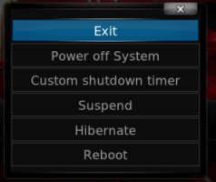
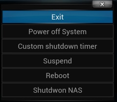

Sun 15 March 2015
I wanted to apply the same modification I made in my previous article to add a shutdown entry to the Exit menu.

I started by looking for the DialogButtonMenu.xml file as I did with the windows box, but it seems that Ouya (and Android in general) don't store their apk installation files in the sdcard.
I tried to search on the Internet on where to find the xbmc fils (in my case, it was SPMC a fork to add some enhancements), and I found out, that it's stored in the /data folder, espacially in :
/data/data/com.semperpax.spmc/cache/apk/assets/addons/skin.confluence
But to get there, first you need to root the Ouya, and access with either ftp, or adb (or some other fancy way). For my case, I installed DroidFtp server, to gain an easy access with my FileZilla client.
I modified the DialogButtonMenu.xml file by inserting this snippet of code before the Control node with id=14. Just make sure, also to modify id, to respect the order:
<control type="button" id="14">
<description>Shutdown NAS button</description>
<width>340</width>
<height>40</height>
<textcolor>grey2</textcolor>
<focusedcolor>white</focusedcolor>
<align>center</align>
<textwidth>290</textwidth>
<texturefocus border="25,5,25,5">ShutdownButtonFocus.png</texturefocus>
<texturenofocus border="25,5,25,5">ShutdownButtonNoFocus.png</texturenofocus>
<onclick>XBMC.runscript(special://home/shutdown.py)</onclick>
<pulseonselect>no</pulseonselect>
<font>font13</font>
<label>Shutdwon NAS</label>
<visible>yes</visible>
</control>
And here's the final result on my SPMC 14.2, with the added entry to shutdown my NAS :

blog comments powered by Disqus